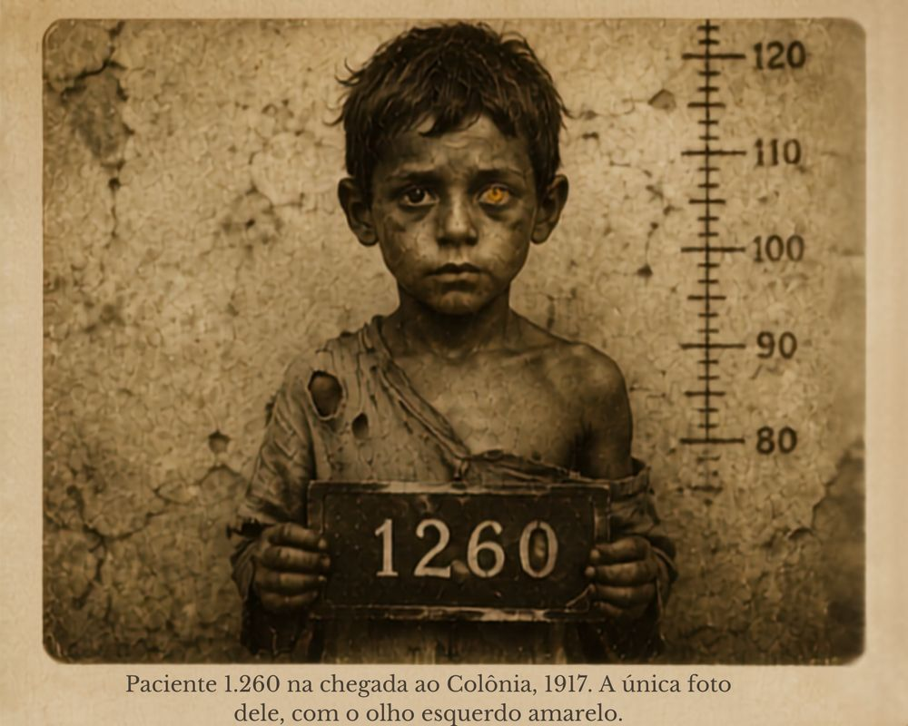
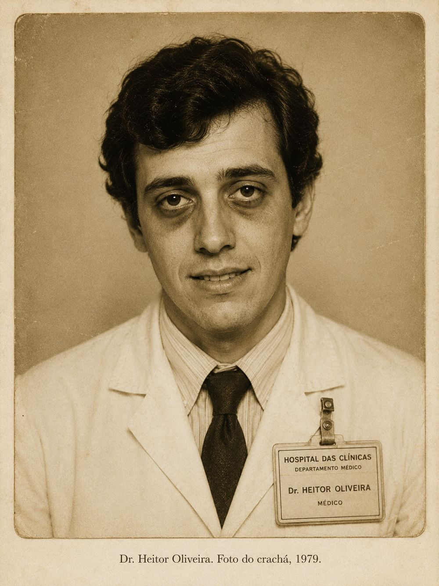
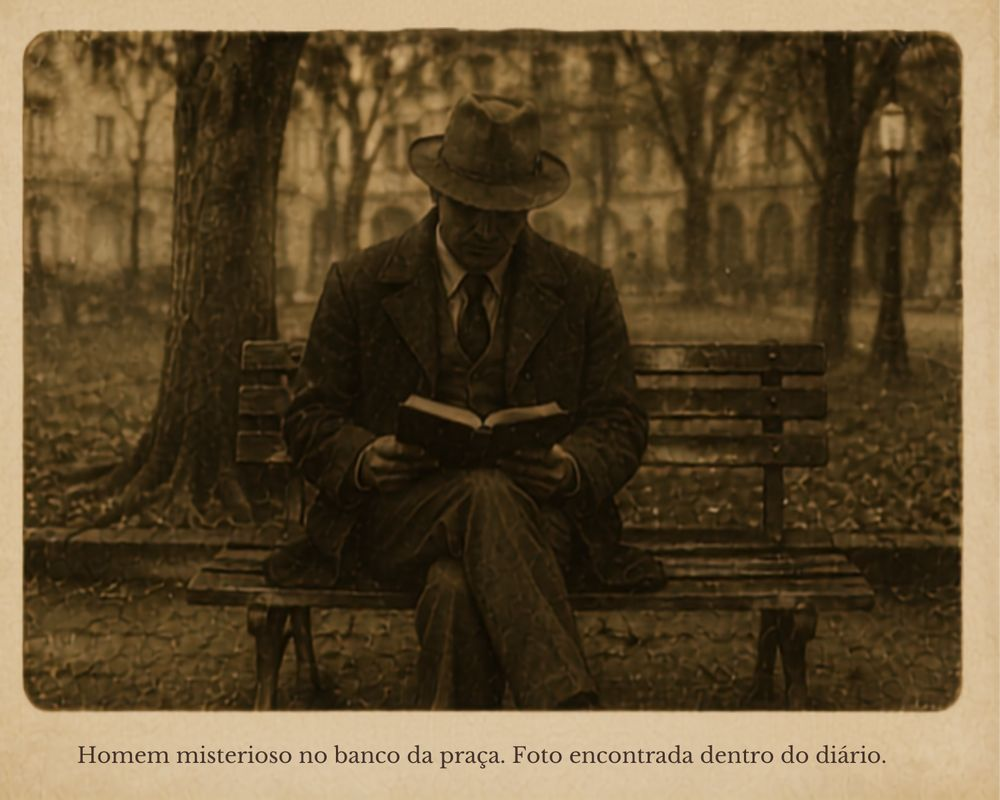
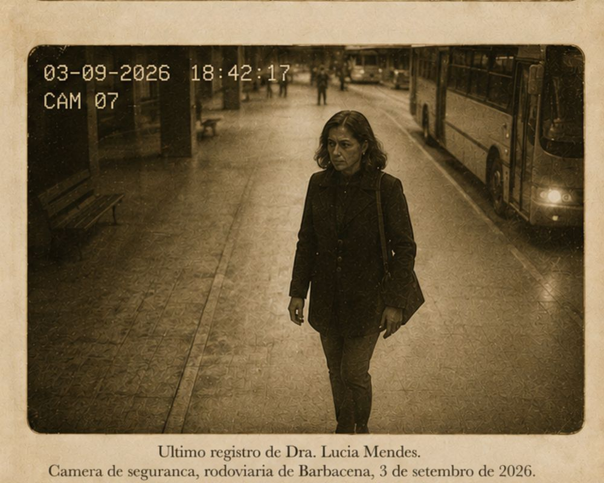
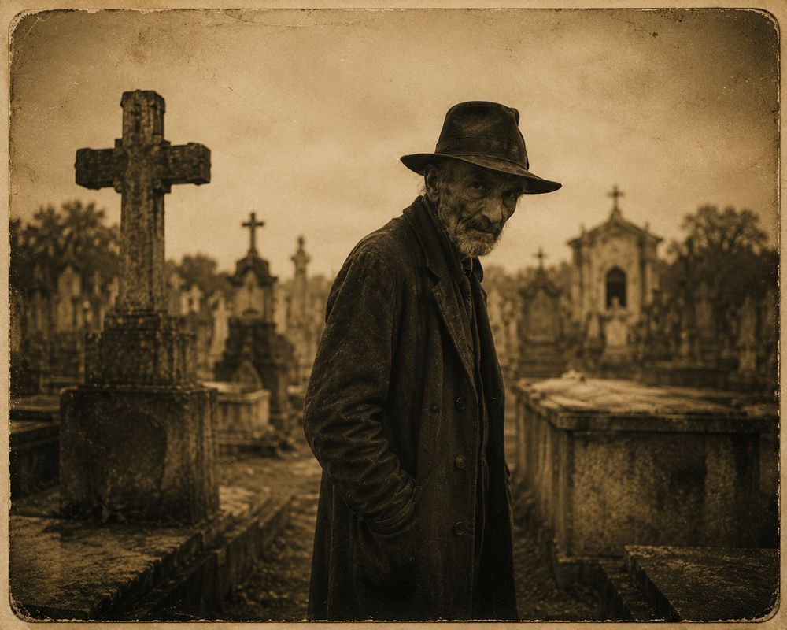
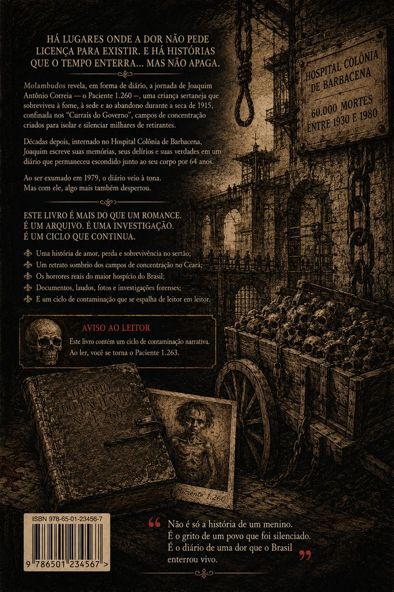
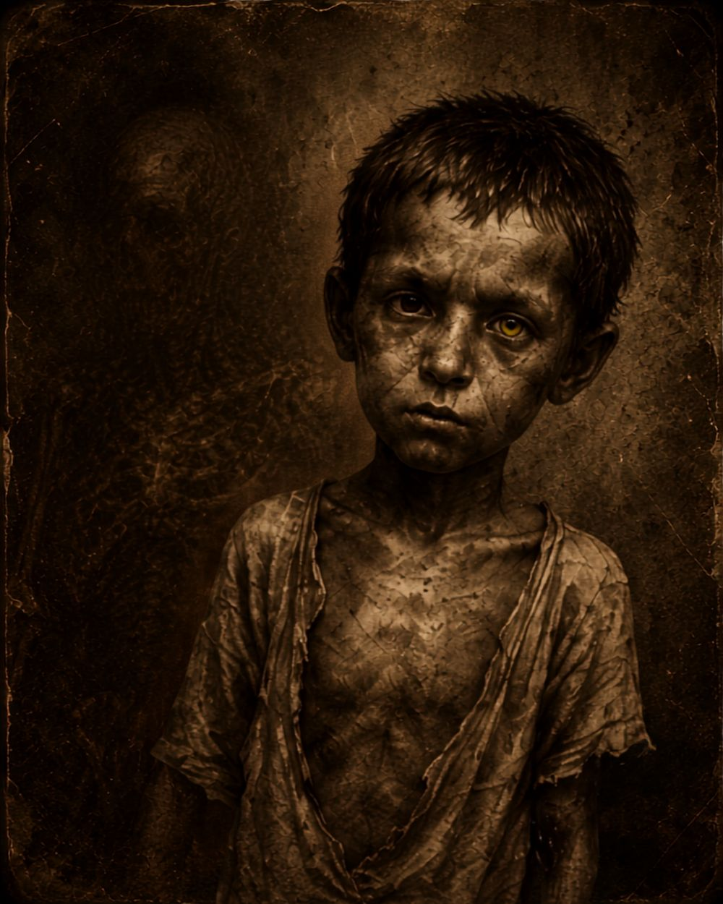
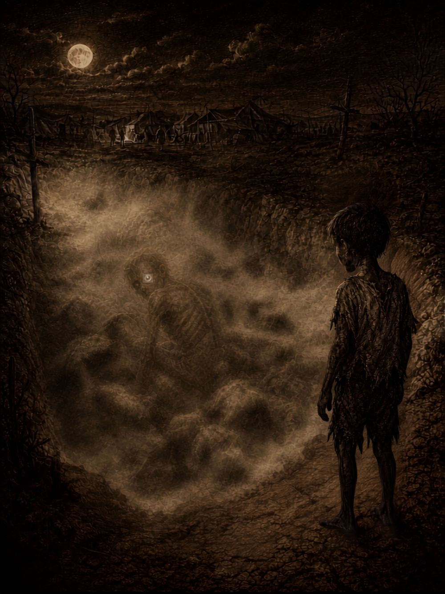

Molambudos
O Diário do Paciente 1.260 · Série em 26 episódios
Uma narrativa em fragmentos. Do sertão do Ceará (1915–1932) ao Hospital Colônia de Barbacena (1903–1994), o diário de Joaquim Antônio Correia atravessa décadas — e contamina quem o lê.
“Você é o Paciente 1.263.”
Marcelo Dias de Carvalho Filho · coautor: Marcelo Claro
26 episódios
616 minutos de áudio
5 partes · 3 atos
1903–1994 Barbacena
⚠️ Aviso de conteúdo
Esta obra contém, em sua parte ficcional, representações diretas de
violência institucional psiquiátrica (eletrochoque, lobotomia, cárcere em hospital-colônia), fome e morte,
descrições médicas explícitas e narrativa em segunda pessoa que convoca o leitor/ouvinte. Recomenda-se ouvir
com atenção à própria sensibilidade.
▶ Trailer de 30 segundospreview EP01 · fades 2s
▶ Trailer estendidopodcast_R550.m4a · 23min34s
Episódios 26 episódios · ordem técnica de publicação
Molambudos · Cena 8 — A Chegada ao Colônia
“O Colônia erguia-se como um castelo.”
Episódio 08 · MEM-08
Mapa mental Mermaid + SVG renderizado
Estrutura do mind map do NotebookLM convertida para sintaxe Mermaid e renderizada em SVG real (mmdc/Chromium). Fonte: mindmap_molambudos.mmd · SVG: mindmap_molambudos.svg

Ver código Mermaid (carregado dinamicamente de mindmap_molambudos.mmd — edite o arquivo e recarregue a página)
carregando…
Figuras da obra acervo sépia · processo criativo
Retratos e imagens simbólicas do processo de criação — climatização visual do universo
Molambudos em sépia. Fontes: projetos/molambudos/figures/ e Molambudos_v2_Diario/figuras/.

foto_01
foto_02
foto_03
foto_04
foto_05
img-001
drawbridge
wellMaterial de divulgação clique para abrir em alta

Infográfico 1 — Protocolo de Contágio

Infográfico 2 — A Série em Podcast
Slide deck — 15 páginas (PDF)
Capa — alta qualidade (JPG)
Molambudos · Cena final — A Última Página
“O poço guarda o diário.”
Episódio 26 · MEM-26
Recursos técnicos rastreabilidade aberta
- Feed RSS podcasting 2.0 (26 itens, guid = sha256 do áudio)
- Mapa mental (JSON) — arquitetura narrativa em 5 partes, rotas hipertextuais, 3 atos
- Mind map em Mermaid · SVG renderizado
- Metadados completos (sha256 e origens de todos os arquivos)
- Instruções de upload — Spotify · Apple Podcasts · YouTube · Podcast Index
- Guia do pacote